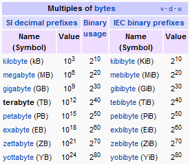
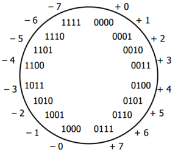
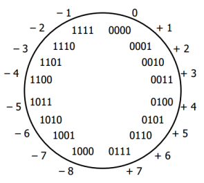
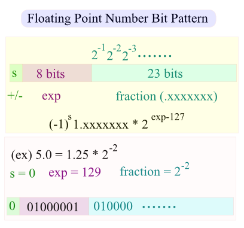
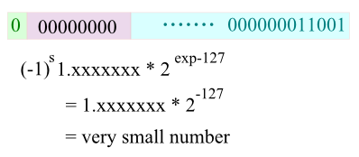
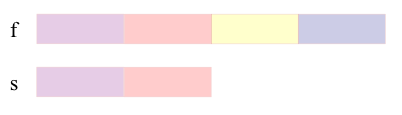
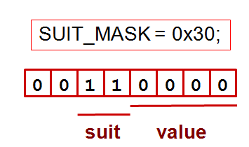
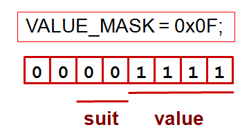

C++ Tutorial
Quiz - Bit Manipulation - 2017


| Symbol | Function | Description |
|---|---|---|
| ~ | Complement | Bit n of ~x is the opposite of bit n of x |
| & | Bitwise And | Bit n of x&y; is 1 if bit n of x and bit n of y is 1. |
| | | Bitwise Or | Bit n of x|y is 1 if bit n of x or bit n of y is 1. |
| ^ | Bitwise Exclusive Or | Bit n of x^y is 1 if bit n of x or bit n of y is 1 but not if both are 1. x^y = (x|y) & !(x&y;) : either x or y but not both |
| >> | Right Shift (divide by 2) | Bit n of x>>s is bit n-s of x. |
| << | Left Shift (multiply by 2) | Bit n of x<<s is bit n+s of x. |
bitwise Complement: The bitwise complement operator, the tilde, ~, flips every bit. The tilde is sometimes called a twiddle, and the bitwise complement twiddles every bit:
This turns out to be a great way of finding the largest possible value for an unsigned number (see Two's Complement):
unsigned int max = ~0;
bitwise AND: The bitwise AND operator is a single ampersand: &:
01001000 & 10111000 = -------- 00001000
bitwise OR: The bitwise OR operator is a |:
01001000 | 10111000 = -------- 11111000
bitwise Exclusive OR (XOR): The exclusive-or operation takes two inputs and returns a 1 if either one or the other of the inputs is a 1, but not if both are. That is, if both inputs are 1 or both inputs are 0, it returns 0. Bitwise exclusive-or, with the operator of a carrot, ^, performs the exclusive-or operation on each pair of bits. Exclusive-or is commonly abbreviated XOR.
01110010 ^ 10101010 -------- 11011000
Suppose, we have some bit, either 1 or 0, that we'll call Z. When we take Z XOR 0, then we always get Z back: if Z is 1, we get 1, and if Z is 0, we get 0. On the other hand, when we take Z XOR 1, we flip Z. If Z is 0, we get 1; if Z is 1, we get 0:
- myBits ^ 0 : No change
- myBits ^ 1 : Flip
It's a kind of selective twiddle(~)..
So, if we do XOR against 111...1111, all the bits of myBits flipped. It's equivalent of doing twiddle(~)..
Another interesting trick using the XOR: It does in place swap of integers.
If we apply the XOR operation twice -- say we have a bit, A, and another bit B, and we set C equal to A XOR B, and then take C XOR B: we get A XOR B XOR B, which essentially either flips every bit of A twice, or never flips the bit, so we just get back A. (We can also think of B XOR B as cancelling out.) As an exercise, can we think of a way to use this to exchange two integer variables without a temporary variable?
Check In-Place Integer Swap with Bit Manipulation.
right shift operator (>>): Moving all the bits of a number a specified number of places to the right. Note that a bitwise right-shift will be the equivalent of integer division by 2:
00000101(5) >> 1 -------- 00000010(2)
left shift operator (<<): Moving all the bits of a number a specified number of places to the left:
[myVariable]<<[number of places]
Suppose we have number 8 written in binary 00001000. If we wanted to shift it to the left 2 places, we'd end up with 00100000; everything is moved to the left two places, and zeros are added as padding. This is the number 32:
00001000(8) << 2 -------- 00100000(32)
Actually, left shifting is the equivalent of multiplying by a power of two:
x << n -------- x * (1 << n)
More specifically:
8 << 3 -------- 8 * (1 << 3) -------- 8 * (2**3) -------- 64
Set a bit (where n is the bit number, and 0 is the least significant bit):
unsigned char a |= (1 << n);
Example:
a 1 0 0 0 0 0 0 0 a |= (1 << 1) = 1 0 0 0 0 0 1 0 a |= (1 << 3) = 1 0 0 0 1 0 0 0 a |= (1 << 5) = 1 0 1 0 0 0 0 0
Clear a bit:
unsigned char b &= ~(1 << n);
Example 1:
b 1 1 1 1 1 1 1 1 b &= ~(1 << 1) = 1 1 1 1 1 1 0 1 b &= ~(1 << 3) = 1 1 1 1 0 1 1 1 b &= ~(1 << 5) = 1 1 0 1 1 1 1 1
Example 2:
Write a macro with two arguments a and pos, where a is a byte and the pos specifies a bit position of the byte. The macro should clear the particular bit position in the given byte.
#include <stdio.h>
using namespace std;
/* bit clear:
1st arg: int, 2nd arg: bit position to clear */
#define CLEARBIT(a, pos) (a &= ~(1 << pos) )
int main()
{
/* 'z': decimal value 122 (=01111010) */
char a = 'z';
/* clearing the 5th bit */
char aOut = CLEARBIT(a, 5);
/* aOut = 'Z': decimal value 90 (=01011010) */
printf("aOut=%c\n", aOut);
return 0;
}
Toggle a bit:
unsigned char c ^= (1 << n);
Example:
c 1 0 0 1 1 0 1 1 c ^= (1 << 1) = 1 0 0 1 1 0 0 1 c ^= (1 << 3) = 1 0 0 1 0 0 1 1 c ^= (1 << 5) = 1 0 1 1 1 0 1 1
Test a bit:
unsigned char e = d & (1 << n); //d has the byte value.
The right/left most byte
assuming 16 bit, 2-byte short integer:
unsigned char right = val & 0xff; // right most (least significant) byte unsigned char left = (val>>8) & 0xff; // left most (most significant) byte
sign bit
assuming 16 bit, 2-byte short integer, two's complement:
bool sign = val & 0x8000; // sign bit
The code below shows how to set or clear a bit of an integer.
#include <iostream>
using namespace std;
void binary(unsigned int n)
{
for(int i = 256; i > 0; i = i/2) {
if(n & i)
cout << " 1";
else
cout << " 0";
}
cout << endl;
}
bool getBit(int n, int index)
{
return ( (n & (1 << index) ) > 0);
}
int setBit(int n, int index, bool b)
{
if(b)
return (n | (1 << index)) ;
else {
int mask = ~(1 << index);
return n & mask;
}
}
int main()
{
int num, index;
num = 16;
cout << "Input" << endl;
for (int i = 7; i >= 0; i--)
cout << getBit(num,i) << " ";
cout << endl;
/* set bit */
index = 6;
cout << "Setting " << index << "-th bit" << endl;
num = setBit(num, index, true);
for (int i = 7; i >= 0; i--)
cout << getBit(num,i) << " ";
cout << endl;
/* unset (clear) bit */
index = 4;
cout << "Unsetting (Clearing) " << index << "-th bit" << endl;
num = setBit(num, index, false);
for (int i = 7; i >= 0; i--)
cout << getBit(num,i) << " ";
cout << endl;
return 0;
}
Output is:
Input 0 0 0 1 0 0 0 0 Setting 6-th bit 0 1 0 1 0 0 0 0 Unsetting (Clearing) 4-th bit 0 1 0 0 0 0 0 0
In computer, every bit is mapped representing something. Let's limit our discussion to 8 bits (1 byte). The number 7 is expressed by the following bit pattern:
00000111 (7)
How about -7? If we use the Most Significant Bit (MSB) as a sign bit, and let the value of 1 represent (-) sign. Then, -7 will have the following bit pattern:
10000111 (-7)
However, when we do an addition of the two, it does not become 0:
00000111 + 10000111 -------- 10001110
Let's look at the diagram for 4-bit number system:
We have two issues: (two 0s and (+1)+(-1) is not zero).
So, we need to change it to the system like the picture below: 
Then, how we make the sum of the two be zero?
00000111 + 1xxxxxxx -------- 00000000
We can find the x's easily:
00000111 + 11111001 -------- 00000000
Notice that we can get
11111001by adding 1 after inverting all the bits in 00000111 (7):
11111000 + 00000001 -------- 11111001
Invert a bit pattern of a number, and then add 1. The resulting number is the two's complement of the number.
To get negative representation of any integer, take bitwise complement and then add one!
~x + 1 = -xIn other words, the bit pattern for -(x+1) can be described as the complement of the bits in x(aka ~x).
So, the two's complement satisfies basic arithmetic, but one's complement (The resulting number by changing just the sign bit) does not.
Here is a simple way of getting two's complement:
| action | sample 1 | sample 2 |
|---|---|---|
| Starting from the right, find the first '1' | 0101001 | 0101000 |
| Invert all of the bits to the left of that one | 1010111 | 1011000 |
Here is 8 bit two's complement:
| binary | two's complement | unsigned |
|---|---|---|
| 00000000 | 0 | 0 |
| 00000001 | 1 | 1 |
| ... | ... | ... |
| 01111110 | 126 | 126 |
| 01111111 | 127 | 127 |
| 10000000 | -128 | 128 |
| ... | ... | ... |
| 11111110 | -2 | 254 |
| 11111111 | -1 | 255 |
Here is an additional question.
What's the representation of bit pattern for short -1?
Hint: adding 1 should turn off all the bits (because -1 + 1 = 0) and short needs 2 bytes.
The answer is 11111111 11111111.

Source A
#include <iostream>
using namespace std;
/* if the dereferenced pointer is 1, the machine is little-endian
otherwise the machine is big-endian */
int endian() {
int one = 1;
char *ptr;
ptr = (char *)&one;
return (*ptr);
}
int main()
{
if(endian())
cout << "little endian\n";
else
cout << "big endian\n";
}
Source B
#include <iostream>
using namespace std;
int endian() {
union {
int one;
char ch;
} endn;
endn.one = 1;
return endn.ch;
}
int main()
{
if(endian())
cout << "little endian\n";
else
cout << "big endian\n";
}
It is tempting to use bit operation for this problem. However, bit shift operator works on integer, not knowing the internal byte order, and that property prevents us from using the bit operators to determine byte order.
To check out the endian, we can just print out an integer (4 byte) to a 4-character output with the address of each character.
#include <stdio.h>
int main()
{
int a = 12345; // x00003039
char *ptr = (char*)(&a;);
for(int i = 0; i < sizeof(a); i++) {
printf("%p\t0x%.2x\n", ptr+i, *(ptr+i));
}
return 0;
}
Output:
0088F8D8 0x39 0088F8D9 0x30 0088F8DA 0x00 0088F8DB 0x00
As we see from the output, LSB (0x39) was written first at the lower address, which indicate my machine is little endian.

Question A: What's the bit pattern of the following?
int i = 25; float f = *(float*)&i;
Note that the last line does not evaluate the value i but the location of i. So, whatever the bit pattern of the integer representing the address of i (&i) considered as a bit pattern representing floating point number, *(float*).
Question B: What's the bit pattern of the following?
float f = 25.0; short s = *(short*)&f;
The &f; is pointing to the starting address of 4 byte floating number. But when we cast it with (short*)&f;, compiler thinks "I was wrong. The address is not representing a 4-byte floating point number but a short type." So, whatever bit pattern happend to reside in the first two bytes is now representing 2-byte short integer type. So, when we dereference it with *(short*)&f;, we won't get the value we want which is 25.
Following example tells if the bit pattern of an interger is a palindrome or not. It first saves the integer to bitset, and the compare (xor) the bit pattern starting from both ends.
#include <iostream>
#include <bitset>
using namespace std;
const int Max = 8*sizeof(int);
bool isPalindrome(int n)
{
bool palindrome = true;
bitset<Max> b = n;
for(int i = 0; i < Max/2 - 1; i++) {
if(b[i] ^ b[Max-1-i]) {
palindrome = false;
break;
}
}
return palindrome;
}
int main()
{
int m;
m = (1 << (Max-1)) + (1 << 0);
cout << bitset<Max> (m) << endl;
cout << "palindrome: " << isPalindrome(m) << endl;
m = (1 << (Max-1)) + (1 << 1);
cout << bitset<Max> (m) << endl;
cout << "palindrome: " << isPalindrome(m) << endl;
m = (1 << (Max-2)) + (1 << 1);
cout << bitset<Max> (m) << endl;
cout << "palindrome: " << isPalindrome(m) << endl;
m = (1 << (Max-6)) + (1 << 11);
cout << bitset<Max> (m) << endl;
cout << "palindrome: " << isPalindrome(m) << endl;
m = (1 << (Max-2)) + (1 << (Max-3)) + (1 << 2) + (1 << 1);
cout << bitset<Max> (m) << endl;
cout << "palindrome: " << isPalindrome(m) << endl;
return 0;
}
Output is:
10000000000000000000000000000001 palindrome: 1 10000000000000000000000000000010 palindrome: 0 01000000000000000000000000000010 palindrome: 1 00000100000000000000100000000000 palindrome: 0 01100000000000000000000000000110 palindrome: 1
(a) i & 0xFF00 (b) i >> 24 (c) i & 0xFF000000 (d) i >> (CHAR_BIT * sizeof(int) - 1)) (e) i >> (CHAR_BIT * sizeof(int) - 3))
My answer: (d)
(a)-(c) does not cover sizeof(int), (e) 3 is wrong.
(d) is comprehensive because of CHAR_BIT (some implementation has 7 bits for char), sizeof(int)(4,8,16 byte int), and right shift works regardless of Endianness (it always shift bits towards least significant).
Here is an example that shows output of 3 integers with field width 5 and left aligned.
// Russian Peasant Multiplication
#include <iostream>
#include <iomanip>
using namespace std;
int RussianPeasant(int a, int b)
{
int x = a, y = b;
int val = 0;
cout << left << setw(5) << x << left << setw(5) << y << left << setw(5) << val << endl;
while (x > 0) {
if (x % 2 == 1) val = val + y;
y = y << 1; // double
x = x >> 1; // half
cout << left << setw(5) << x << left << setw(5) << y << left << setw(5) << val << endl;
}
return val;
}
int main() {
RussianPeasant(238, 13);
return 0;
}
The output should look like this:
238 13 0 119 26 0 59 52 26 29 104 78 14 208 182 7 416 182 3 832 598 1 1664 1430 0 3328 3094
Actually, the multiplication is known as Russian Peasant Multiplication. Whenever x is odd, the value of y is added to val until x equals to zero, and then it returns 3094.
How may operations for addition?
Notice that we're adding y to val only when x is odd.
Let's make the table. 1st column is for x, the 2nd column indicates whether odd or even, and the 3rd column is the representation of the binary bit of the 2nd column:
| x | Binary | Number |
|---|---|---|
| 238 | 0 | 256 |
| 119 | 1 | 128 |
| 59 | 1 | 64 |
| 29 | 1 | 32 |
| 14 | 0 | 16 |
| 7 | 1 | 8 |
| 3 | 1 | 4 |
| 1 | 1 | 2 |
| 0 | 0 | 1 |
So, how many 1's in the 2nd column? Yes, 6 times operations for addition. Another interesting fact is that if we sum all the red numbers in the 2nd column, it is none other than the original number, 238(=128+64+32+8+4+2).
Given an input file with four billion integers, provide an algorithm to generate an integer which is not contained in the file. Assume you have 1 GB memory. Follow up with what you would do if you have only 10 MB of memory.
1GB = 8 billion bits. So, with those bits, we can map all 4 billion integers (actually, 2147483648 non-negative integers). We'll use integer arrays a[1+N/32] because an integer has 32bits.
For example, whenever we encounter a number n, we switch the bit for that nth-bit:
10: ....00000000 00000000 00000000 00000010 00000000
16: ....00000000 00000000 00000000 10000010 00000000
35: ....00000100 00000000 00000000 10000010 00000000
a[1] a[0] ->
Here is the code for N = 100, and in this case, we need only 4 integer arrays (4x32 > 100)
#include <stdio.h>
#define BITSPERWORD 32
#define SHIFT 5
#define MASK 0x1F // 31(=00011111): mask for 32 bit int
#define N 100
int a[1 + N/BITSPERWORD];
/* 1 << (i & MASK): left shift from 0 to 31, represents 2^i
i >> SHIFT: array index
0-31 a[0]
32-63 a[1]
64-95 a[2]
... ...
*/
void setBit(int i) { a[i>>SHIFT] |= (1<<(i & MASK)); }
void clearBit(int i) { a[i>>SHIFT] &= ~(1<<(i & MASK)); }
int testBit(int i){ return a[i>>SHIFT] & (1<<(i & MASK)); }
int main(void)
{
FILE *f = fopen("integers.txt","r");
int i;
for (i = 0; i < N; i++)
clearBit(i);
printf("--input--\n");
while (fscanf(f,"%d", &i;) != EOF) {
printf("%d%s", i,",");
setBit(i);
}
printf("\n--output\n");
for (i = 0; i < N; i++)
if (!testBit(i))
printf("%d%s", i,",");
return 0;
}
Output:
--input-- 1,3,5,81,55,60,99, --output 0,2,4,6,7,8,9,10,11,12,13,14,15,16,17,18,19,20,21,22,23,24,25,26,27,28,29,30,31, 32,33,34,35,36,37,38,39,40,41,42,43,44,45,46,47,48,49,50,51,52,53,54,56,57,58,59, 61,62,63,64,65,66,67,68,69,70,71,72,73,74,75,76,77,78,79,80,82,83,84,85,86,87,88, 89,90,91,92,93,94,95,96,97,98,
In the code, what the i << SHIFT in a[i << SHIFT] is doing?
It gives us the array index. For example when SHIFT=5 case (32-bit integer):
31 00011111 => 000 is the index(=0) 32 00100000 => 001 is the index(=1) 63 00111111 => 001 is the index(=1) 64 01000000 => 010 is the index(=2) 95 01011111 => 010 is the index(=2) 96 01100000 => 011 is the index(=3)
Also, 1<<(i & MASK)) sets the bit for a given index, i, and actually, the value of (i & MASK) ranges from 0 to 31 which is the relative bit location for each array element i.
Write a routine to flash a LED every one second. Use delay(ms) for delay. Bit-4 (16 bit total), Active Low (i.e Off=1, ON=0)
#include <stdio.h>
#include <stdint.h>
#ifdef _WIN32
#include <windows.h>
void sleep(unsigned milliseconds)
{
Sleep(milliseconds);
}
#else
#include <unistd.h>
void sleep(unsigned milliseconds)
{
usleep(milliseconds * 1000);
}
#endif
// print dec in binary
void printBinary(uint16_t a)
{
// 16 bit print
for(uint16_t i = 32768; i > 0; i = (i>>1)) {
if(a & i)
printf("1");
else
printf("0");
}
printf("\n");
}
void LedFlash()
{
volatile
uint16_t a = (uint16_t)0;
while(1) {
// bit-4
a ^= (1 << 4);
printBinary(a);
sleep(1000); //1 sec delay
}
}
int main()
{
LedFlash();
return 0;
}
Output:
0000000000010000 0000000000000000 0000000000010000 0000000000000000 0000000000010000 ....
In this example, we're trying to store card information with minimal space usage (using only 6 bits). The face value (1-13) will be stored at 0-3th bits and the suit info at 4-5th bits. As shown in the mask pictures below, we're using two bit masks: Suit & Value:

The following code handles two questions: (1) Same suit? (2) Is the face value of the first card is greater than the second card?
#include <iostream>
using namespace std;
#define SUIT_MASK 0x30
#define VALUE_MASK 0x0F
enum Suit {
CLUBS = 0, // x00
DIAMONDS = 16, // x10
HEARTS = 32, // x20
SPADES = 48 // x30
};
typedef struct Card {
enum Suit suit;
unsigned int value;
} Hand;
bool sameSuit(Suit c1, Suit c2)
{
return (! ((c1 & SUIT_MASK) ^ (c2 & SUIT_MASK)));
}
bool greaterValue(unsigned int c1, unsigned int c2)
{
return ((unsigned int)(c1 & VALUE_MASK) >
(unsigned int)(c2 & VALUE_MASK));
}
int main()
{
Hand hand[5] = {{CLUBS, 1}, {SPADES, 5}, {DIAMONDS, 10}, {HEARTS, 5}, {CLUBS, 3}};
cout << " same suit= " << sameSuit(hand[0].suit, hand[1].suit) << endl;
cout << " same suit= " << sameSuit(hand[0].suit, hand[4].suit) << endl;
cout << " greater value= " << greaterValue(hand[1].value, hand[2].value) << endl;
cout << " greater value= " << greaterValue(hand[1].value, hand[4].value) << endl;
return 0;
}
Output:
same suit= 0 same suit= 1 greater value= 0 greater value= 1
Write a code that finds the minimum integer from two integers without any comparison. Also, any if/else is not allowed.
#include <iostream>
using namespace std;
int getSignBit(int n)
{
int sign = (n >> 31) & 0x01;;
return sign;
}
// returns the maximum
// without using any comparison and if/else statements
int getMax(int a, int b)
{
int signa, signb;
// a >= b : signa = 1, signb = 0;
// a < b : signa = 0, signb = 1;
signb = getSignBit(a-b);
signa = signb ^ 1;
return signa*a + signb*b;
}
int main()
{
int m = 215, n = 215;
cout << getMax(m,n) << endl;
return 0;
}
Finding the number of different symbols between two same length strings.
The following code initially does exclusive-or (xor) of the the two strings, and then count the bits with 1 which is a process of clearing bits.
#include <iostream>
int hamming(unsigned int i, unsigned int j)
{
int distance = 0;
unsigned int val = i ^ j;
while(val) {
distance++;
val &= val - 1;
}
return distance;
}
int main()
{
/* 18 = 10010
30 = 11110 */
std::cout << hamming(18, 30); // = 2
}
For more on bit related code, Bit Twiddling Hacks
Ph.D. / Golden Gate Ave, San Francisco / Seoul National Univ / Carnegie Mellon / UC Berkeley / DevOps / Deep Learning / Visualization